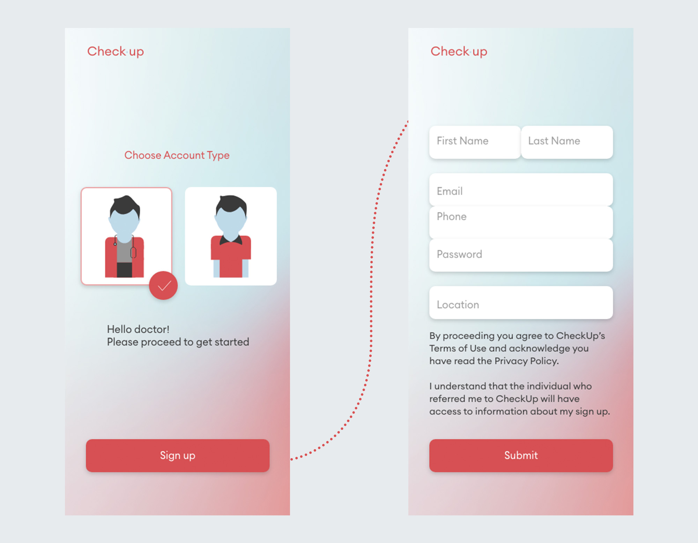
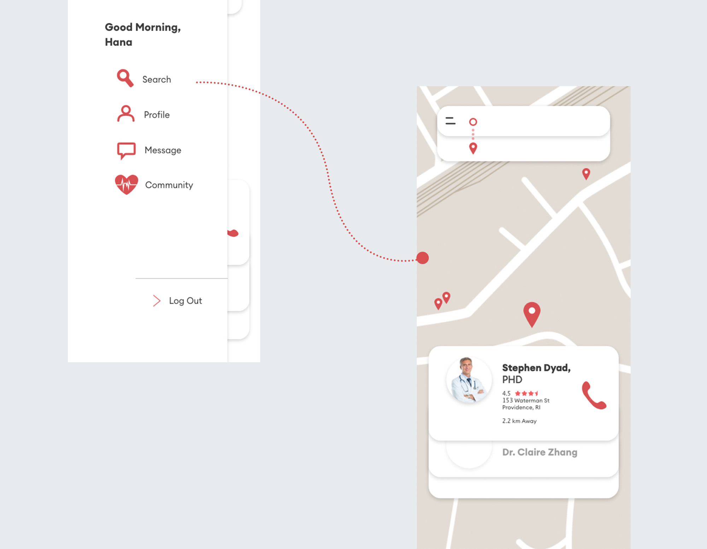
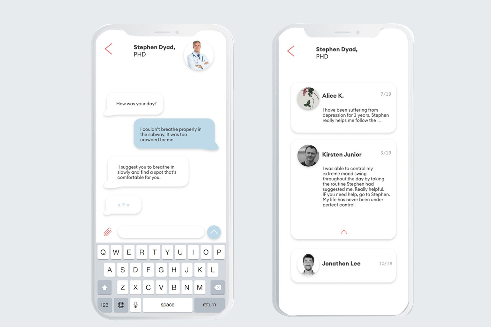
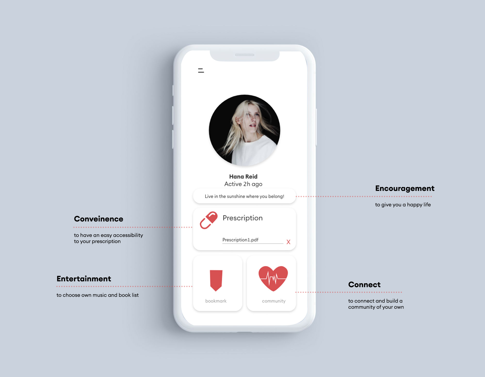

Check Up
UI/UX
People who experience mental illness often do not receive enough support to lessen the pain they go through. Most notably, selected have responded that their closest companions, families, or friends are unaware of the fact that the person is in pain. This personal application enables the users to communicate with qualified doctors, therapists, and other patients nearby to make the process more convenient.

1. Home Page
This is the landing page of the application. When the user chooses to sign up, it navigates to 'Type' page to choose the account type. Then, it proceeds to 'Sign Up' page where the user can include the account details.
2. Dashboard & Connect
After the user completes a set of question, it navigates to Dashboard which includes three options: Diagnosis Information, Search. and Connect. 'Connect' enables the user to locate nearby patients to create a healthy community to fight the mental disorder together.

3. Search
Another option on the Dashboard is 'Search. It can also be navigated from the hamburger menu on the left. 'Search' allows the user to find nearby psychiatrists with an access to call.

4. Message & Review
By clicking the profile icon, the user can view the ratings of the psychiatrist. On the hamburger menu, the user can directly chat with the psychiatrist. When swiped left, the hamburger menu slides closed.

5. Profile
By clicking my profile, the user can edit profile, view a pdf version of the prescription, navigate to 'Bookmark', and log out. 'Bookmark' shows all the saved-as-favorite songs and books that the user has personalized.